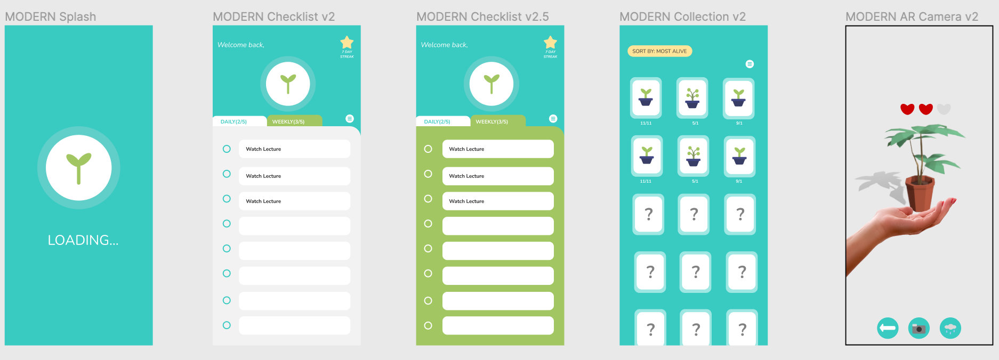

A Field of Dailies
OVERVIEW
Dailies is a unique task management application created at ARI the University of Michigan's XR club with a strong focus on mindfulness and cultivating virtual AR Plants within the Unity environment. Users have the ability to input their daily tasks and efficiently manage their to-do lists. As they successfully complete these tasks, they earn valuable water drops, a virtual currency that serves as a resource for nurturing and tending to their AR plants, which can be unlocked by achieving specific milestones.
MY ROLE
In my role as the project team leader this semester, my primary emphasis has been on instructing and teaching our team members(10+) in the essential aspects of XR development. This encompasses comprehensive training in Unity coding, 3D modeling, and teaching the LightShip SDK. Additionally, I've taken the lead in UI/UX design, overseeing the creation process.
DEVELOPMENT STACK
- Unity/C#
- Figma
- Blender
DETAILS
These AR plants demand regular care and introduce a heart system, where they generate hearts for every two days the user neglects to water them. The visual representation of these AR plants can be experienced directly on the palm of the user's hand, thanks to the integration of the Lightship SDK technology.
UI Figma board that I designed for this project:
Check out our completed project slides: